정보통신기사(구) (2013-10-12 기출문제)
1과목: 디지털 전자회로
1. 반파정류회로를 사용한 전원설비를 전파정류회로로 변경하면 리플률은 어떻게 변화되는가?
- 약 1.5배 증가한다.
- 약 2.5배 감소한다.
- 약 3.5배 증가한다.
- 약 4.5배 감소한다.
(정답률: 69%)

2. 정류회로 출력 성분 중 교류인 리플을 제거하기 위해 정류회로 다음 단에 접속되는 회로는 무엇인가?
- 평활 회로
- 클램핑 회로
- 정전압 회로
- 클리핑 회로
(정답률: 82%)
3. 다음 중 정전압 회로의 안정도 파라미터에 해당되지 않는 것은?
- 전압안정계수
- 온도안정계수
- 출력저항
- 출력직류전압
(정답률: 51%)
4. 다음 주어진 회로에서 점선으로 표시된 회로의 기능이 아닌 것은?
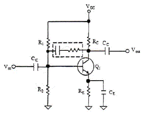
- 증폭 이득을 조절할 수 있다.
- 입출력 임피던스를 조절할 수 있다.
- 대역폭을 조절할 수 있다.
- 온도 특성을 조절할 수 있다.
(정답률: 80%)
5. 다음 중 FET(Field Effect Transistor) 대한 설명으로 옳지 않은 것은?
- 입력저항이 수 [MΩ]으로 매우 크다.
- 다수 캐리어에 의해 동작하는 단극성 소자이다.
- 접합트랜지스터(BJT)보다 잡음이 심하다.
- 이득대역폭이 좁다.
(정답률: 71%)
6. 그림과 같은 에미터폴로우 회로에서 h-파라메타가 hie=2.1[kΩ], hfe=100이고, R1=10[kΩ], R2=10[kΩ], Re=4[kΩ]일 때, 입력저항은 약 얼마인가?
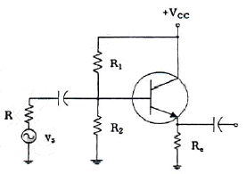
- 402[kΩ]
- 404[kΩ]
- 406[kΩ]
- 408[kΩ]
(정답률: 51%)
7. 다음과 같은 연산증폭기 회로의 출력 전압은?
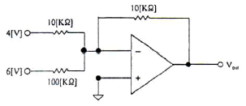
- -64[V]
- -4.6[V]
- +64[V]
- +4.6[V]
(정답률: 81%)
8. 다음 중 발진조건에 대한 설명으로 틀린 것은?
- 궤한증폭기의 이득(A)과 궤환율(β)의 곱이 1보다 작으면 발진 진폭이 감소한다.
- 궤환증폭시 입력신호와 궤환신호의 위상이 180° 차이가 난다.
- 증폭된 출력의 일부를 입력쪽으로 정궤환시켜야 한다.
- 발진이 지속될 수 있는 상태를 유지하기 위해서는 βA=1 조건을 만족해야 한다.
(정답률: 75%)
9. 수정발진기는 어떤 효과를 이용한 것인가?
- 차폐효과
- 압전기 효과
- 홀 효과
- 제에벡 효과
(정답률: 77%)
10. 다음 중 위상변조에 대한 설명으로 틀린 것은?
- 위상을 변조신호에 의해 직선적으로 변하게 하는 방식이다.
- 변조지수는 위상감도계수에 비례한다.
- PM방식을 사용하여 FM신호를 만들 수 있다.
- 반송파를 중심으로 3개의 측파대를 가지며 그 크기는 변조지수에 관계된다.
(정답률: 56%)
11. 펄스부호변조(PCM) 방식에서 아날로그 신호를 디지털 신호로 변환시키는 과정을 바르게 나타낸 것은?
- 표본화 → 양자화 → 부호화 → 압축
- 표본화 → 부호화 → 양자화 → 압축
- 표본화 → 양자화 → 압축 → 부호화
- 표본화 → 압축 → 양자화 → 부호화
(정답률: 62%)
12. 다음 그림과 같은 주기적인 펄스파형의 듀티비(Duty Ratio)는 얼마인가?(단, T=150[us] , t0=30[us])
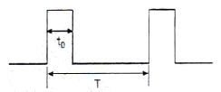
- 10[%]
- 12[%]
- 20[%]
- 22[%]
(정답률: 83%)
13. RC 회로의 출력에서 최종치의 10[%]~90[%]까지 얻는데 소요되는 시간을 무엇이라 하는가?
- 지연 시간
- 하강 시간
- 상승 시간
- 전이 시간
(정답률: 85%)
14. 십진수 10.375를 2진수로 변환하면?
- 1011.101(2)
- 1010.101(2)
- 1010.011(2)
- 1011.110(2)
(정답률: 74%)
15. 다음 그림에서 정논리의 경우 게이트 명칭은?
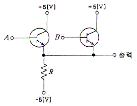
- AND 게이트
- OR 게이트
- NAND 게이트
- NOR 게이트
(정답률: 83%)
16. 플립플롭은 몇 개의 안정 상태를 갖는가?
- 1
- 2
- 4
- ∞
(정답률: 70%)
17. 조합 논리 회로 중 0과 1의 조합으로 부호화를 행하는 회로로 2n개의 입력선과 n개의 출력 선로 구성된 것은?
- 디코더(Decoder)
- DEMUX
- MUX
- 인코더(Encoder)
(정답률: 75%)
18. 플립플롭 4개로 구성된 계수기가 가질 수 있는 최대의 2진 상태는 몇 가지인가?
- 8가지
- 12가지
- 16가지
- 20가지
(정답률: 82%)
19. 다음 회로는 어떤 회로인가?
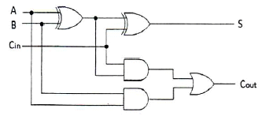
- 반가산기 2개와 OR게이트를 이용한 전가산기 회로
- 반가산기 3개와 OR게이트를 이용한 전가산기 회로
- 반가산기 2개와 NOR게이트를 이용한 전가산기 회로
- 반가산기 3개와 NOR게이트를 이용한 전가산기 회로
(정답률: 77%)
20. 다음 중 계수형 전자 계산기(Digital Computer)의 보조 기억 장치가 아닌 것은?
- 자기 드럼(Magnetic Drum)
- 자기 테이프(Magnetic Tape)
- 자기 디스크(Magnetic Disk)
- 자기 코어(Magnetic Core)
(정답률: 78%)
2과목: 정보통신 시스템
21. 다음 중 정보통신망의 주요 구성요소가 아닌 것은?
- 교환기
- 전송로
- 단말기
- 서비스
(정답률: 82%)
22. 정보통신시스템에서 여러 단말장치들이 하나의 통신회선을 통하여 데이터를 전송할 수 있는 기법을 무엇이라 하는가?
- CRC(Cyclic Redundancy Code)
- LRC(Longitudinal Redundancy Check)
- FEC(Forward Error Correction)
- MUX(Multiplexing)
(정답률: 84%)
23. 다음 문장의 괄호 안에 들어갈 알맞은 것은?
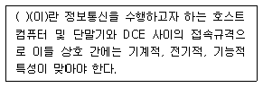
- 데이터 처리방식
- 데이터 전송방식
- 인터페이스
- 인터로킹
(정답률: 80%)
24. 다음 중 RIP(Routing Information Protocol)의 동작 특성이 아닌 것은?
- Distance Vector 알고리즘을 사용하여 최단 경로를 구한다.
- 링크 상태 라우팅에 근거를 둔 도메인 내 라우팅 프로토콜이다.
- 라우팅 정보의 기준인 서브네트워크의 주소는 클래스 A, B, C의 자연 마스크를 기준으로 하여 라우팅 정보를 구성한다.
- 자신이 갖고 있는 라우팅 정보를 RIP 메시지로 작성하여 인접해 있는 모든 라우팅에게 주기적으로 전송한다.
(정답률: 52%)
25. 프로토콜의 구성요소 중 ‘속도 맞춤이나 정보의 순서’등의 전달되는 정보간 시간의 약속을 규정하는 것은?
- 의미(Semantics)
- 구문(Syntax)
- 타이밍(Timing)
- 포맷(Format)
(정답률: 88%)
26. OSI 참조모델에서 제 N-1계층의 패킷의 데이터 부분은 제 N계층의 패킷(데이터와 헤더) 전체를 포함한다. 이러한 개념을 무엇이라고 하는가?
- 서비스
- 인터페이스
- 대등-대 대등 프로세스
- 캡슐화
(정답률: 88%)
27. 다음 중 통신 프로토콜의 기능과 관계가 없는 것은?
- 오류 제어
- 흐름 제어
- 전송 제어
- 연결 제어
(정답률: 51%)
28. 다음 중 표준 제정을 위한 표준기구와 거리가 먼 것은?
- ANSI
- ITU-T
- IEEE
- OSI
(정답률: 85%)
29. 다음 중 ITU-T No.7 신호방식에 대한 설명으로 틀린 것은?
- 공통선 신호방식이다.
- 디지털 교환망에 적합한 신호방식이다.
- 통화 중에는 제어정보의 송수신이 불가능하다.
- 교환기와 교환기 사이에 제어신호를 전달하는 방식이다.
(정답률: 82%)
30. 지능형교통체계(ITS) 서비스를 위해 차량탑재장치(OBE, On Board Equipment)와 노변기지국(RSE, Road Side Equipment)간 통신망으로 가장 적합한 것은?
- HFC(Hybrid Fiber and Coaxial)
- DSRC(Dedicated Short Range Communication)
- WiFi
- FTTC(Fiber To The Curb)
(정답률: 79%)
31. 패킷화 기능이 없는 일반형 터미널을 접속하여 패킷의 조립과 분해 기능을 대신해 주는 장치는?
- DTE
- PMX
- PAD
- PS
(정답률: 85%)
32. 근거리통신망(LAN) 방식표기 중 10Base-T의 전송속도와 전송매체를 표현한 것으로 알맞은 것은?
- 전송속도 : 10[kbps], 전송매체 : 광케이블
- 전송속도 : 10[Mbps], 전송매체 : 광케이블
- 전송속도 : 10[Mbps], 전송매체 : 꼬임 쌍선 케이블(Twisted Pair Cable)
- 전송속도 : 10[kbps], 전송매체 : 꼬임 쌍선 케이블(Twisted Pair Cable)
(정답률: 80%)
33. 다음 중 부가가치통신망(VAN)이 일반 통신망에 비해 추가적으로 제공하는 기능으로 볼 수 없는 것은?
- 전화서비스 기능
- 정보처리 기능
- 프로토콜 변환기능
- 통신속도 변환기능
(정답률: 80%)
34. 전화통신망(PSTN)에서 최번시 1시간에 발생한 호(call) 수가 120이고, 평균통화시간이 3분일 때 이 회선의 호량(Erlang)은?
- 0.1[Erl]
- 6[Erl]
- 40[Erl]
- 360[Erl]
(정답률: 88%)
35. 다음 중 회선교환방식에 비하여 패킷교환방식의 장점이 아닌 것은?
- 회선효율이 높아 경제적 망구성이 가능하다.
- 장애발생 등 회선상태에 따라 경로설정이 유동적이다.
- 실시간 데이터 전송에 유리하다.
- 프로토콜이 다른 이기종망간 통신이 가능하다.
(정답률: 73%)
36. 근거리통신망(LAN)에서 사용되는 장비인 브리지(Bridge)는 OSI 7계층의 어느 계층의 기능을 주로 수행하는가?
- 응용계층
- 데이터링크계층
- 네트워크계층
- 트랜스포트계층
(정답률: 83%)
37. ‘정보통신 설계의 3대 요소’가 아닌 것은?
- 기능성
- 기술기준의 적합성
- 운영의 편리성
- 설치의 목적과 필요성
(정답률: 53%)
38. TMN(전기통신관리망)의 구성요소 중 운영체제와 망 요소 사이에서 프로토콜 변환, 경보 임계값 설정 및 통신 속도 제어 등의 기능을 수행하는 것은 무엇인가?
- OS
- MD
- DCN
- NE
(정답률: 71%)
39. 대칭키 암호화 방식을 사용하여 4명이 통신을 한다고 할 때, 4명이 서로 간 비밀통신을 하기 위해 필요한 비밀키의 수는?
- 4
- 6
- 8
- 10
(정답률: 81%)
40. 다음 문장이 설명하는 것은 무엇인가?
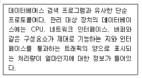
- DNS
- SNMP
- OSPF
- TCP/IP
(정답률: 75%)
3과목: 정보통신 기기
41. 처리된 자료를 문자나 도형으로 변환하여 마이크로필름에 기록하고 정보를 검색하는 장치는?
- 디지타이저
- CAD/CAM
- COM/CAR
- 마우스
(정답률: 71%)
42. 다음 중 정보 단말기의 전송제어 기능이 아닌 것은?
- 입·출력 제어기능
- 송·수신 제어기능
- 모뎀 제어기능
- 에러 제어기능
(정답률: 65%)
43. 2개의 전극(Anode와 Cathode) 사이에 삽입된 유기물층에 가해지는 전기자에 의해 발광하게 되는 것은?
- CRT
- OLED
- PDP
- TFT-LCD
(정답률: 87%)
44. 컴퓨터가 어떤 터미널에 전송할 데이터가 있는 경우 터미널이 수신준비가 되어 있는지를 물어 준비가 된 경우에 터미널로 데이터를 전송하는 것을 무엇이라 하는가?
- 폴링
- 셀렉션
- 링크
- 리퀘스트
(정답률: 81%)
45. 다음 중 집중화기에 대한 설명으로 옳지 않은 것은?
- m개의 입력 회선을 n개의 출력 회선으로 집중화하는 장비이다.
- 집중화기의 구성 요소로는 단일 회선 제어기, 다수 선로 제어기 등이 있다.
- 집중화기는 정적인 방법(Static Method)의 공동 이용을 행한다.
- 부 채널의 전송속도의 합은 Link 채널의 전송속도보다 크거나 같다.
(정답률: 83%)
46. 다음 중 LAN에서 사용되는 리피터의 기능으로 맞는 것은?
- 네트워크 계층에서 활용되는 장비이다.
- 두 개의 서로 다른 LAN을 연결한다.
- 모든 프레임을 내보내며, 필터링 능력을 갖고 있다.
- 같은 LAN의 두 세그먼트를 연결한다.
(정답률: 73%)
47. 다음 중 모뎀의 수신기 구성요소가 아닌 것은?
- 변조기(Modulator)
- 등화기(Equalizer)
- 복조기(Demodulator)
- 디코더(Decoder)
(정답률: 67%)
48. HFC 네트워크의 전송 매체로 가장 적합한 것은?
- 무선
- UTP 케이블
- 평행 이선식(Twisted Pair)
- 광섬유케이블과 동축케이블
(정답률: 75%)
49. 다음 중 전화기의 기본 구성이 아닌 것은?
- 통화 회로
- 신호 회로
- 송수신 공용회로
- 측음 방지회로
(정답률: 75%)
50. 트래픽 단위에서 180[HCS]는 몇 얼랑(Erlang)인가?
- 3[Erl]
- 4[Erl]
- 5[Erl]
- 6[Erl]
(정답률: 75%)
51. 사무실에서 인터넷 구내 망을 설치하여 음성전화 서비스를 제공하는 설비는?
- PBX
- IP-PBX
- ISDN-PBX
- Solo-PBX
(정답률: 84%)
52. 인터넷을 통하여 음성전화 서비스가 제공되는 단말기를 무엇이라 하는가?
- VoIP 전화기
- 무선 전화기
- 코드리스 전화기
- 유선 전화기
(정답률: 90%)
53. 다음 CATV의 구성 요소 중 가입자 설비로 컨버터, 홈 터미널, TV 수상기 등으로 구성된 것은?
- 전송계
- 단말계
- 센터계
- 분배계
(정답률: 66%)
54. 다음 중 AM 수신기의 감도를 향상하기 위한 방법으로 틀린 것은?
- 주파수 변환회로의 변환 컨덕턴스(Conductance)가 큰 것을 사용한다.
- 초단 증폭기의 잡음이 작은 것을 사용한다.
- 중간 주파 증폭기의 대역폭을 넓게 한다.
- 공중선 결합회로 및 각 증폭단의 이득을 크게 한다.
(정답률: 73%)
55. 다음 중 수신기의 성능 측정 변수에 해당하지 않는 것은?
- 감도(Sensitivity)
- 선택도(Selectivity)
- 안정도(Stability)
- 신뢰도(Reliability)
(정답률: 64%)
56. 셀룰러(Cellular) 방식의 이동통신에서 입력속도 9.6[kbps], 출력속도 1.2288[Mbps]일 때 확산이득은 약 얼마인가?
- 15.03[dB]
- 19.40[dB]
- 21.07[dB]
- 24.50[dB]
(정답률: 78%)
57. 이동통신시스템에서 단말기가 이동교환기 내에 있는 기지국에서 통화의 단절 없이 동일한 주파수를 사용하는 기지국으로 옮겨 통화하는 경우에 해당되는 Handoff는?
- Hard Handoff
- Soft Handoff
- Dual handoff
- Softer Handoff
(정답률: 77%)
58. 멀티미디어 및 하이퍼미디어의 저장방식과 다중화방식 등을 규정하는 국제표준 규격은?
- MHEG
- HTML
- MPEG
- XML
(정답률: 74%)
59. 어느 멀티미디어 기기의 전송대역폭이 6[MHz]이고 전송속도가 19.39[Mbps]일 때, 이 기기의 대역폭 효율값은 약 얼마인가?
- 2.23
- 3.23
- 5.25
- 6.42
(정답률: 87%)
60. 다음 중 멀티미디어 디지털 콘텐츠의 저작권 보호를 위한 ‘디지털 워터마킹’에 대한 설명으로 옳지 않은 것은?
- 비가시성으로 눈에 띄지 않아야 한다.
- 왜곡 및 잡음에 대해 강건해야 된다.
- 인식을 위해서 원본을 가지고 있어야 한다.
- 최소의 bit를 사용해야 한다.
(정답률: 81%)
4과목: 정보전송 공학
61. 통신속도가 4,800[baud]일 때, 한 개의 신호 단위를 전송하는데 필요한 시간은?
- 1/2,400[sec]
- 1/4,800[sec]
- 1/9,600[sec]
- 1/1,200[sec]
(정답률: 80%)
62. 다음 양자화 방식 중 스텝 간격에 따른 분류가 아닌 것은?
- 선형 양자화
- 비선형 양자화
- 적응형 양자화
- 비예측 양자화
(정답률: 75%)
63. 어떤 신호가 4개의 데이터 준위를 가지며 펄스시간은 1[ms]일 때 비트 전송률은 얼마인가?
- 1,000[bps]
- 2,000[bps]
- 4,000[bps]
- 8,000[bps]
(정답률: 61%)
64. 다음 중 디지털 변조가 아닌 것은?
- ASK
- FSK
- PSK
- SSB
(정답률: 89%)
65. -2[dB/km]의 손실을 가지는 케이블의 시작점에서의 전력이 4[mW]였다면 5[km] 뒤에서의 신호의 전력은 얼마인가?
- 0.2[mW]
- 0.4[mW]
- 0.6[mW]
- 0.8[mW]
(정답률: 74%)
66. 30[m] 높이의 빌딩 옥상에 설치된 안테나로부터 주파수가 2[GHz]인 전파를 송출하려고 한다. 이 전파의 파장은 얼마인가?
- 5[cm]
- 10[cm]
- 15[cm]
- 20[cm]
(정답률: 76%)
67. 이동통신망에서 발생하는 페이딩 중 고층 건물, 철탑 등 인공구조물에 의하여 발생하는 페이딩은 ?
- Long-term Fading
- Short-term Fading
- Rician Fading
- Mid-term Fading
(정답률: 64%)
68. 다음 중 Shannon의 채널 용량의 공식으로 알맞은 것은? (단, B : 대역폭, C : 채널용량, S : 신호, N : 잡음)
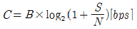
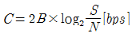
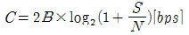
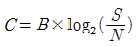
(정답률: 63%)
69. 플래그 동기방식에서 비트 스터핑(Bit Stuffing)을 행하는 목적은?
- 프레임 검사 시퀀스의 구분
- 데이터의 투명성 보장
- 정보부 암호화
- 데이터 변환
(정답률: 75%)
70. 다음 중 기저대역 전송 부호조건으로 틀린 것은?
- 전송 대역폭이 넓어야 한다.
- 전송 부호의 코딩 효율이 양호해야 한다.
- 타이밍 정보가 충분히 포함되어야 한다.
- DC성분이 포함되지 않아야 한다.
(정답률: 64%)
71. 다음 중 동기식 전송방식의 특징으로 옳은 것은?
- 사용단말기가 버퍼기능이 있어야 하며 장비가 복잡하다.
- 전송문자마다 앞에 시작비트와 뒤에 정지비트를 지닌다.
- 전송속도는 보통 1,800[bps] 이하로 사용한다.
- 전송문자 사이에 일정하지 않는 휴지 간격 (Idle Time)이 존재한다.
(정답률: 62%)
72. BSC(Binary Synchronous Communication) 프로토콜의 특징이 아닌 것은?
- 사용 코드에 제한이 있다.
- 동일한 통신 회선상의 터미널은 동일한 코드를 사용한다.
- 전이중 전송 방식만 가능하다.
- 전파 지연 시간이 긴 선로에서는 비효율적이다.
(정답률: 77%)
73. 네트워크 토폴로지 중에서 다수의 허브(HUB)를 이용하여 연결할 때 가장 적합한 토폴로지는?
- 버스(Bus) 방식
- 트리(Tree) 방식
- 링(Ring) 방식
- 메쉬(Mesh) 방식
(정답률: 55%)
74. 다음 중 VLSM을 지원하는 내부 라우팅 프로토콜이 아닌 것은?
- RIP v1
- EIGRP
- OSPF
- Integrated IS-IS
(정답률: 55%)
75. 다음 중 브로드캐스트 주소(Broadcast Address)에 대한 설명으로 알맞은 것은?
- 데이터를 보낼 때 특정 노드에게만 데이터를 보낸다.
- 네트워크 주소에서 호스트의 비트가 모두 1인 주소이다.
- 네트워크 검사용으로 예약된 주소이다.
- 호스트 식별자에 127를 붙여서 사용한다.
(정답률: 78%)
76. 다음 중 IP 헤더의 구조에 속하지 않는 것은?
- 버전(Version)
- 헤더길이(Header length)
- IP 주소
- 긴급 포인터(Urgent Pointer)
(정답률: 82%)
77. 짝수 블록합 검사(Blocksum Check) 방식을 사용하는 데이터 전송에서 수신측에서 정확하게 수신했을 때 나오는 데이터 ###에 들어가야 할 비트는 어느 것인가?
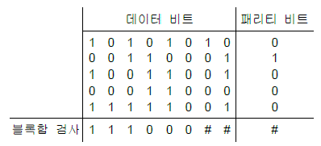
- 1 0 0
- 1 1 1
- 0 1 0
- 0 0 1
(정답률: 82%)
78. 다음 ARP(검출 후 재전송) 방식 중 가장 단순한 방식은?
- Adaptive ARQ
- Go-back-N ARQ
- Stop-and-wait ARQ
- Selective ARQ
(정답률: 80%)
79. 다음 중 데이터그램(Datagram) 방식에 대한 설명으로 가장 알맞은 것은? (문제 오류로 실제 시험에서는 2, 4번이 정답처리 되었습니다. 여기서는 2번을 누르면 정답 처리 됩니다.)
- 수신지의 마지막 노드에서는 송신지에서 송신한 순서대로 패킷이 도착한다.
- 각 패킷은 독립적으로 설정된 경로에 따라 전송된다.
- 미리 설정된 경로상의 각 노드는 패킷에 대한 경로를 알고 있으므로 경로설정과 관련된 결정을 수행할 필요가 없다.
- 네트워크 운용에 있어서 보다 높은 유연성을 제공한다.
(정답률: 87%)
80. 다음 중 UDP(User Datagram Protocol)의 주요 특징으로 틀린 것은?
- 신뢰성 있는 연결형 트랜스포트 서비스 프로토콜이다.
- 데이터 전송을 블록 단위로 수행한다.
- 전송 데이터에 대한 전송 확인 및 안정성에 대해서는 고려하지 않는다.
- 다수의 상대자에게 메시지를 전송하는 경우에 적합하다.
(정답률: 72%)
5과목: 전자계산기일반 및 정보통신설비기준
81. 다음 중 자기 디스크의 특징이 아닌 것은?
- 자기 드럼보다 Access Time이 빠르다.
- 자기 드럼보다 기억용량이 매우 크다.
- 각각의 트랙에는 데이터가 고정 크기의 블록 단위로 저장된다.
- 고속, 대용량의 보조기억장치로 널리 이용된다.
(정답률: 52%)
82. 2진수 10111011에 대해 BCD 코드로 변환하고, 이를 3-초과 코드와 그레이 코드로 표현한 것으로 옳은 것은? ( 순서대로 BCD코드 3-초과 코드 그레이 코드 )
- 0001 1000 0111 : 0100 1011 1010 : 0001 1010 0100
- 0001 1000 0111 : 0100 1011 1100 : 0001 1010 0100
- 0001 1000 0111 : 0100 1011 1010 : 0001 1100 0100
- 0001 1000 0111 : 0100 1011 1100 : 001 1100 1001
(정답률: 66%)
83. 두 2진수 A, B에 대하여, 'A-B'는 다음의 어느 연산과정과 같은가? (단, 2진수는 2의 보수로 표현한다.)
- 각 A의 비트 값들에 NOT 연산을 한 후 B를 더한다.
- 각 B의 비트 값들에 NOT 연산을 한 후 A를 더한다.
- 각 A의 비트 값들에 NOT 연산을 한 후 B를 더하고 1을 더한다.
- 각 B의 비트 값들에 NOT 연산을 한 후 A를 더하고 1을 더한다.
(정답률: 66%)
84. 다음 문장이 설명하는 시스템은 무엇인가?
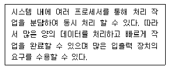
- 병렬 처리 시스템
- 혼합 시스템
- 데이터 시스템
- 직렬 시스템
(정답률: 85%)
85. 다음 문장의 괄호 안에 들어갈 용어는?
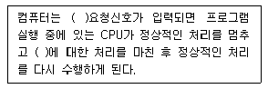
- Recursive
- DUMP
- DMA
- Interrupt
(정답률: 88%)
86. 메모리 인터리빙(Memory Interleaving)의 사용 목적은?
- 메모리의 저장 공간을 높이기 위해서
- CPU의 Idle Time을 없애기 위해서
- 메모리의 Access 횟수를 줄이기 위해서
- 명령들의 Memory Access 충돌을 막기 위해서
(정답률: 61%)
87. 디스크를 사용하려면 최초에 반드시 해야 할 사항은 무엇인가?
- 내용을 삭제 후 잠근다.
- 파티션을 만들고 포맷한다.
- 폴더와 파일들로 채운다.
- 시분할(Time Slice) 한다.
(정답률: 86%)
88. 운영체제에서 폴더와 파일들은 어떤 구조로 구성되어 있는가?
- 트리(Tree)
- 큐(Queue)
- 스택(Stack)
- 배열(Array)
(정답률: 68%)
89. 다음 중 기계어로 번역된 프로그램은?
- 목적 프로그램(Object Program)
- 원시 프로그램(Source Program)
- 컴파일러(Compiler)
- 로더(Loader)
(정답률: 78%)
90. 다음 중 설명이 틀린 것은?
- 하드웨어가 이해할 수 있는 언어를 기계어라고 부른다.
- 기계어에 대응되어 만들어지는 어셈블리어는 각각 다르다.
- C, PASCAL, FORTRAN 등은 고급언어이다.
- 어셈블리어는 기계어라고 부른다.
(정답률: 66%)
91. 방송통신설비의 기술기준에 관한 규정에서 정의하고 있는 ‘선로설비’가 아닌 것은?
- 분배장치
- 전주
- 관로
- 배선반
(정답률: 71%)
92. 다음 중 부가통신사업의 신고사항을 변경하고자 할 때 신고하여야 할 사항이 아닌 것은?
- 자본금
- 제공역무의 종류
- 대표자
- 상호·명칭·주소
(정답률: 66%)
93. 방송통신을 행하기 위하여 계통적·유기적으로 연결·구성된 방송통신설비의 집합체는?
- 전화망
- 전송설비
- 전원설비
- 방송통신망
(정답률: 79%)
94. 다음 중 정보통신공사의 설계 및 감리에 관한 설명으로 옳지 않은 것은?
- 감리원은 설계도서 및 관련 규정에 적합하게 공사를 감리하여야 한다.
- 설계도서를 작성한 자는 그 설계도서에 서명 또는 기명날인하여야 한다.
- 발주자는 용역업자에게 공사의 설계를 발주하고 소속 기술자만으로 감리업무를 수행하게 하여야 한다.
- 공사를 설계하는 자는 기술기준에 적합하게 설계하여야 한다.
(정답률: 82%)
95. 미래창조과학부장관은 전기통신의 원활한 발전과 정보사회의 촉진을 위하여 전기통신기본계획을수립하여 공고하여야 한다. 이 기본계획에 포함되지 않는 사항은?
- 정보통신공사업의 발전에 관한 사항
- 전기통신의 질서유지에 관한 사항
- 전기통신의 이용효율화에 관한 사항
- 전기통신사업에 관한 사항
(정답률: 58%)
96. 옥내통신선은 ‘300[V] 초과 전선과의 이격 거리’를 얼마 이상으로 하여야 하는가?
- 6[cm]
- 9[cm]
- 12[cm]
- 15[cm]
(정답률: 59%)
97. 홈네트워크설비 중 단지네트워크장비를 설치할 때 고려할 사항이 아닌 것은?
- 함체나 랙에는 잠금장치를 하여야 한다.
- 누구나 조작이 가능하도록 개방되어 있어야 한다.
- 집중구내통신실에 설치하여야 한다.
- 별도의 함체나 랙(Rack)으로 설치하여야 한다.
(정답률: 81%)
98. 다음 문장의 괄호 안에 들어갈 알맞은 것은?
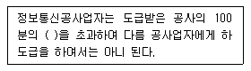
- 20
- 30
- 50
- 60
(정답률: 82%)
99. 다음 중 보편적 역무를 제공하는 전기통신사업자를 지정할 때 고려사항이 아닌 것은?
- 정보통신기술의 발전 정도
- 전기통신사업자의 기술적 능력
- 제공할 보편적 역무의 요금수준
- 제공할 보편적 역무의 사업규모 및 품질
(정답률: 60%)
100. 공사 발주자가 감리원에 대해 취할 수 있는 시정조치에 해당하는 것은?
- 시정지시
- 감리원의 업무정지
- 감리원의 감봉조치
- 감리원의 철수요구
(정답률: 76%)